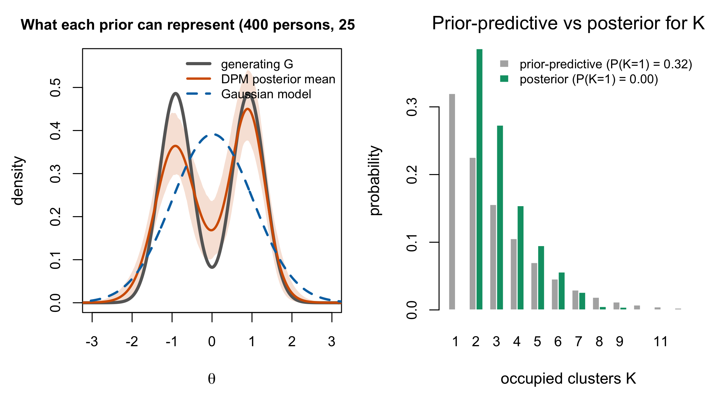

16 DPM Priors for Latent Traits
Chapter 15 built the Dirichlet process as an object in its own right. This chapter puts it where this research programme puts it — on the latent trait distribution of a Rasch model — and then confronts the question that placement raises. Reviewer 2 asked about identifiability. Chapter 4 answered the parametric half. This is the semiparametric half, and it is harder, because the thing that has to be identified is no longer a vector.
The chapter’s conclusion is not that the semiparametric model is identified. Under the anchored Rasch conditions, it is that the observable law is generated by the \(I+1\) displayed integral evaluations of \(G\), subject to their identities. This is a theorem rather than a limitation of any particular estimator, but it is not a claim that those values are unconstrained independent dimensions or that no equivalent generating set can be written. It changes how a recovered latent distribution should be read.
16.1 The genealogy of DP-IRT
Putting a nonparametric prior on the ability distribution of an IRT model is about twenty years old and has been proposed several times for different reasons.
Duncan and MacEachern (2008) give the nonparametric-Bayes treatment of the ability distribution in the item-response setting. Miyazaki and Hoshino (2009) attack a different target with the same tool: their concern is that logistic and normal-ogive item characteristic curves admit “only limited patterns of shapes,” so the model may not fit, and their semiparametric construction relaxes the item side rather than the person side. San Martín et al. (2011) are the identification paper and are the source Section 16.3 rests on. Paganin et al. (2022) are the computational and practical reference. The companion package draws on that parameterization, but its current defaults must be read from package source rather than attributed wholesale to the paper.
Two works named in this book’s plan carry no claim here: Karabatsos (2016), whose identity in the manuscript’s reference list is still unconfirmed and which is not held, and Hu et al. (2020), which is held in this book’s libraries but has not been read at a locator for this chapter. They are named so that a reader who knows them can see they are undigested rather than dismissed.
What the genealogy shows is that “DP prior on \(G\)” is not one idea. It is at least three: relax the ability distribution, relax the item curves, or study what either relaxation does to identification. This book does the first and cares about the third.
16.2 The model as used here
The measurement model is unchanged from Equation 10.1. Level 2 is replaced.
\[ \theta_p \mid G \stackrel{\text{iid}}{\sim} G, \qquad G(\cdot) = \int N(\cdot \mid \mu, \sigma^2)\, dF(\mu, \sigma^2), \qquad F \sim \mathrm{DP}(\alpha, H_0) . \tag{16.1}\]
This is Lo’s construction Equation 15.6 with a normal kernel: the Dirichlet process supplies a discrete mixing measure over kernel parameters, and the kernel smooths it into a continuous density. Proposition 15.1 is why the mixture is necessary rather than decorative.
Read from the companion package’s own specification, the base measure is \(H_0 = N(0, \sigma^2_\mu) \times \text{Inv-Gamma}(\nu_1, \nu_2)\) with package defaults \(\sigma^2_\mu = 2\), \(\nu_1 = 2.01\), \(\nu_2 = 1.01\). The package’s own reproduction vignette uses \(\sigma^2_\mu=3\) for the Paganin specification, so the value 2 is a package default rather than a paper-level attribution. As in Section 10.4, \(\nu_1\) just above 2 puts the cluster-variance prior at \(\operatorname{E}[\tilde\sigma^2] = \nu_2/(\nu_1 - 1) \approx 1\) with a heavy tail.
Equivalently, in the CRP representation of Theorem 15.2, each person carries a cluster label \(z_p\) with \(\mathbf{z} \sim \mathrm{CRP}(\alpha, P)\) and \(\theta_p \mid z_p \sim N(\tilde\mu_{z_p}, \tilde\sigma^2_{z_p})\). This is what the package actually samples, and Theorem 15.2 is the guarantee that it is the same model as Equation 16.1 rather than an approximation to it. The finite truncation at \(M\) components in a blocked sampler is an approximation, and Ishwaran and Zarepour (2000) study what it costs. In the companion simulation’s production run the cost was monitored rather than assumed: a guard on the truncation bound fired in five of 4,800 DP fits, and none of the run’s convergence exceptions traced to it (Lee 2026) — evidence about this design’s operating range, not a general license.
The base measure is a prior on cluster locations, not on \(\theta\). This is the most common misreading of Equation 16.1, and it inverts the model’s meaning. \(H_0\) says where mixture components sit; \(G\) is what the components add up to. Setting \(H_0\)’s mean to zero centres the components a priori and does not centre \(G\) — as Section 16.3 shows, that failure is not a numerical nuisance but the reason one identification strategy is unavailable. Nor does \(\sigma^2_\mu = 2\) say the latent trait has variance 2: it says cluster centres are dispersed with variance 2, and the variance of \(G\) combines that dispersion with the within-cluster variances and the weights.
16.3 Identification in the semiparametric model
The structure to be identified is now the pair \(S = (\boldsymbol\beta, G)\), and the model is identified if the map from \(S\) to the distribution of the observed responses is injective — Definition 4.1, with \(G\) in place of a parameter vector.
16.3.1 Location indeterminacy persists, and is now shared
Proposition 16.1 Location indeterminacy in the semiparametric model. Adapted from San Martín et al. (2011, § 1) and Appendix F § F.2
For any \(c \in \mathbb{R}\) the structure \(S = (\boldsymbol\beta, G)\) is observationally equivalent to \(T_c(S) = (\boldsymbol\beta + c\mathbf{1}, G_{+c})\), where \(G_{+c}\) is \(G\) shifted by \(c\). The semiparametric Rasch model is therefore not identified without a location restriction.
Nothing here is new relative to Proposition 4.1; what is new is where the indeterminacy lives. In the parametric model it was shared between \(\boldsymbol\beta\) and the scalar \(\mu_\theta\). Here it is shared between \(\boldsymbol\beta\) and the location of an infinite-dimensional object, and that is what makes one of the three identification strategies—the shortcut of centring only the DPM base measure—insufficient on its own.
16.3.2 There is still no scale indeterminacy
Proposition 16.2 Absence of scale indeterminacy. Adapted from Proposition 4.2, San Martín (2016, §§ 8.4–8.7), and Appendix F § F.2.3
Under the Rasch model the discriminations are fixed at unity, so a rescaling \(\theta \mapsto a\theta\), \(\beta \mapsto a\beta\) changes the linear predictor from \(\theta - \beta\) to \(a(\theta - \beta)\) and hence changes the response probabilities. One constraint therefore suffices.
This carries over from Section 4.3 unchanged, and it is the reason the semiparametric Rasch model is tractable at all. Under the 2PL it fails, and the failure is worse here than it was in Chapter 4: the scale indeterminacy becomes an indeterminacy in the scale of \(G\) itself. A recovered \(G\) whose scale is not pinned is not a distribution of abilities; it is an equivalence class of them, and its variance, its quantiles and its tail probabilities are all unidentified. The broad title carries the 2PL as a bounded extension from a Rasch-centred spine, and here is the one place where the two models genuinely diverge in kind rather than in degree.
For the 2PL, the observational orbit may be written with \(a>0\) as
\[ \theta_p^* = a(\theta_p-c),\qquad \beta_i^* = a(\beta_i-c),\qquad \lambda_i^* = \lambda_i/a, \tag{16.2}\]
with \(G^*\) the push-forward of \(G\) under \(\theta\mapsto a(\theta-c)\). Location and scale functionals of \(G\) are meaningful only after choosing one representative of this orbit. This book uses item centring for Rasch results. For 2PL distributional functionals in Part VI, every posterior draw must be reported after the same declared affine normalization (for example, centred item difficulties plus a product-of-discriminations scale condition, or an explicitly equivalent draw-wise transformation). Quantiles and tail cutoffs must be transformed with the draw; otherwise they refer to different scales. No finite-item semiparametric 2PL identification theorem is claimed here (C-010). Chapter 26 takes the two-parameter case up in its own right: the constraint pair the companion software actually imposes, what it pins and what it merely names, and why the finite-item result of Section 16.3.4 does not extend by analogy.
16.3.3 What zero-centering the base measure does not do
Section 4.5 listed three broad ways to choose a representative of the location orbit: constrain the abilities, constrain the items, or transform posterior draws. The ordinary unconstrained DPM construction used by the companion package rules out one naive implementation of the first strategy; it does not rule out every constrained nonparametric prior.
Proposition 16.3 A centred base measure does not centre each realized DPM. Adapted from San Martín et al. (2011, § 1)
In the ordinary DPM construction Equation 16.1, centring the base measure \(H_0\) at zero fixes the prior expectation of \(G\) but does not impose \(\operatorname{E}_G[\theta]=0\) on every realization. A realized random \(G\) has an almost surely non-zero mean unless the construction or its draws are additionally constrained or transformed.
San Martín et al. (2011, sec. 1) state exactly this for the general nonparametric random-effects setting: with \(G_0 = N(0,\sigma^2)\) the marginal centring \(\operatorname{E}(\theta_i \mid \sigma^2) = 0\) holds, yet “the random distribution \(G\) has an almost sure (a.s.) non-zero mean,” and this “leads to an identification problem yielding biased inferences for the fixed effects.”
The proposition is deliberately narrow. Symmetric or otherwise constrained random measures, dependent atom/weight constructions, and draw-wise recentering or standardizing can support functional restrictions. A translation of every draw relocates \(G\) without changing its shape; a scale transformation changes the numerical scale and must carry quantiles and cutoffs with it. These alternatives define different parameterizations or priors and require their own posterior justification, but their existence refutes a universal impossibility claim.
Item-centring is therefore the companion package’s chosen Rasch parameterization, not the only mathematically available option. Read from its source, the package does not merely default to it: it refuses the combination, erroring on constrained_ability with a DPM prior on the ground that constraining \(\theta \sim N(0,1)\) defeats the purpose of the prior. Proposition 16.3 is enforced in code, not left to the analyst.
The same source illustrates Section 16.3.2 from the implementation side. The package’s default identification is constrained_item for the Rasch model and unconstrained for the 2PL and 3PL — because under those models one location constraint does not suffice, and the scale has to be fixed by post-hoc rescaling instead. Its correctness is elementary: if \(\boldsymbol\beta\) and \(\boldsymbol\beta + c\mathbf{1}\) both sum to zero then \(Ic = 0\), so \(c = 0\). It constrains only the parametric component and leaves \(G\) entirely free, which is exactly what a semiparametric model wants.
16.3.4 What a finite test identifies about \(G\)
Even with the location pinned, \(G\) is not identified. This is the result the chapter is built around.
Proposition 16.4 Partial identifiability of \(G\). Restated from San Martín et al. (2011, Theorem 5)
For the semiparametric Rasch model with \(I\) items, the item parameters and the \(I+1\) basic scalar functionals of \(G\) below are Bayesian-identified if and only if one item parameter is almost surely constant, provided at least two items are available. With \(\beta_1 = 0\) a.s. the identified functionals are
\[ \xi_G(k) = \int_{\mathbb{R}} \frac{e^{k\theta}}{(1+e^{\theta})\prod_{j \ge 2}(1+e^{\theta-\beta_j})}\, dG(\theta), \qquad k = 0, 1, \dots, I . \tag{16.3}\]
Full identification of \(G\) requires \(I \to \infty\), under conditions given in their Theorem 6.
Three readings of Proposition 16.4, each of which changes something.
It is a Laplace transform, not a set of moments. San Martín et al. observe that with \(d\widetilde G(\theta) = dG(\theta)/\prod_j(1+e^{\theta-\beta_j})\), Equation 16.3 becomes \(\xi_G(k) = \int e^{k\theta}\,d\widetilde G(\theta)\) — the Laplace transform of a tilted version of \(G\), evaluated at the integers \(0,\dots,I\). What a test pins down is a finite number of samples of a transform of a reweighted \(G\), and the weighting is by the test itself.
It is related to, but not the same as, the sum-score examples of Chapter 13. San Martín et al. note that “the well known conditional sufficiency of the total score for the ability parameters in the conditional [Rasch model] is inherited to the marginal model. Given the item parameters, the total score is sufficient for \(G\).” So Theorem 3.1 propagates: the sum-score distribution carries all likelihood information about \(G\), and Proposition 16.4 supplies \(I+1\) basic scalar generators for it. Proposition 13.1 instead gives a design-specific weak-separation example: on six items the two score distributions are different but only 0.035 apart in total variation, so unlimited persons would distinguish them even at fixed \(I\). Partial identification guarantees that other distinct \(G\)’s share the identified functionals; it does not say that this selected pair does. Nor is the TV sequence in Section 13.2.1 determined by the number \(I+1\) alone: it also changes with the test kernel and item design.
It is a caution about reading a recovered EDF. San Martín et al. put it more sharply than this book would have dared: the need for an asymptotic experiment “jeopardizes the empirical meaning of a Bayesian nonparametric formulation of the model under a finite number of items.” A posterior over \(G\) from a 25-item test is a posterior, and it is honest, but the data constrain 26 functionals and the prior supplies the rest of the shape. That is not an argument against the method; it is the reason the method needs a prior rather than only a likelihood, and it is why Section 15.6 matters more here than it would in a parametric model.
Appendix F § F.4 attributes the partial-identifiability result to San Martín et al. (2011, Theorem 3). Read directly, their Theorem 3 is about the semiparametric Rasch Poisson Counts Model — a different model — and it gives full identification of \(\boldsymbol\beta\) and \(G\) with at least two probes together with one of the theorem’s identifying restrictions: an anchored item parameter, known mean of \(G\), or known quantile. The binary Rasch result is Theorem 5, and it is the one quoted in Proposition 16.4.
The functional form the appendix writes is right, and so is the count \(I+1\); the attribution is not, and the theorem it names says close to the opposite for a different model. The appendix also states the restriction as sum-to-zero centring, whereas Theorem 5 is stated — as an if and only if — with one item parameter almost surely constant. Logged as C-014.
16.4 What the DPM buys, and what it costs
Chapter 14 placed the DPM among the flexible-\(G\) families. With Chapter 15 and this chapter in hand the entry can be filled in properly.
What it buys. A posterior over \(G\) rather than an estimate of it, so every identified or prior-regularized functional in Part VI inherits posterior uncertainty. No finite population component count must be fixed; the DPM instead induces a posterior over the finite-sample occupied partition count \(K\), which is not the same estimand as a true mixture order. Modularity: only the level-2 term of Equation 10.4 changes, so everything derived in Parts II–IV survives unaltered. Lo’s no-sample estimator (Section 15.4) also shows that the prior mean density equals the base-kernel mixture; with a normal base this centres prior expectation on a normal density. That fact alone does not establish low frequentist or predictive cost when the truth is normal.
Figure 16.1 shows the representational half of this on one dataset, and nothing else.

Two things about how that figure may be used. It is a capacity demonstration of the same kind as Figure 14.1 — the Gaussian family cannot express two modes at any parameter value, and the DPM can — and it carries no performance claim, because a single dataset cannot support one and because performance is the companion book’s question (Section 16.4). And its right-hand panel is in the chapter as a correction: an earlier version of this book compared the posterior on \(K\) against the wrong prior quantity and concluded that the data had barely moved it. Integrating Antoniak’s law properly over the \(\mathrm{Gamma}(1,3)\) prior gives the opposite — a total variation of \(0.36\), with the prior placing a third of its mass on a single cluster and the posterior placing none. What survives of the original point is only the narrow one: \(K\) is an occupied-partition count at this sample size, not a mixture order, and Proposition 16.4 concerns neither.
What it costs. MCMC rather than EM, with the mixing and convergence questions that brings. Prior sensitivity through \(\alpha\), which Section 15.6.1 showed is larger and less transparent than it appears. The need to choose and document a constrained or transformed representative of the location/scale orbit. And a residual discreteness: Equation 16.1 is continuous because the kernel is, but the mixing measure is a countable set of atoms, and with a small \(\alpha\) and few persons the recovered density can inherit visible lumps from the mixing measure rather than from the population.
One cost the literature has measured rather than argued: Paddock et al. (2006) report that a nonparametric population model “pays very little in efficiency when a parametric population distribution” is adequate, so the insurance is cheap — but also that when the truth is bimodal and the data informative, their nonparametric models attain lower squared-error loss for the unit parameters and larger integrated squared error for \(G\) than the parametric ones (2006, sec. 4.2.2.1). Flexibility is not uniformly better, and this book does not claim it is.
What it does not buy is identification. Proposition 16.4 is a statement about the model, not about the prior, and no prior repairs it. What a good prior does is make the unidentified part of \(G\) depend on a defensible assumption instead of an accidental one.
The empirical size of those gains and costs belongs to the companion simulation book. This theory chapter therefore does not use a realized DPM fit as evidence for Proposition 16.4, does not compare a posterior occupied-cluster distribution with its prior, and does not report a recovered density band. Any such fit must reconstruct draws of the DP mixing measure (including weight uncertainty and residual base mass), report convergence diagnostics, and compare the full prior-predictive and posterior \(K\) distributions. Those are empirical validation requirements, not consequences of partial identification.
16.5 Sources and provenance
Equation 16.1, the base measure and its default hyperparameters, the CRP representation and the truncation were read from the companion package’s own model specification and theory vignette, not from its documentation. The package source sets \((\sigma^2_\mu,\nu_1,\nu_2)=(2,2.01,1.01)\); its reproduction vignette uses \(\sigma^2_\mu=3\) for Paganin et al. (2022), so the current package default is reported without claiming exact inheritance.
Proposition 16.1 and Proposition 16.2 adapt the Appendix F draft §§ F.2.2–F.2.3. The location argument is also the identification problem stated by San Martín et al. (2011, sec. 1). The Rasch/2PL scale distinction follows San Martín (2016, secs. 8.4–8.7 and Table 8.1), with \(G\) carried by the draw-wise push-forward in Equation 16.2.
Proposition 16.3 is adapted. The technical core — that centring \(H_0\) leaves an ordinary unconstrained \(G\) with an almost surely non-zero mean, and that this produces an identification problem with biased inferences — is San Martín et al. (2011, sec. 1), read directly. The appendix routes the same point through Yang and Dunson (2010) via Paganin et al. (2022, sec. 2.3); neither of those is quoted here because the primary states it. The chapter does not generalize this construction-specific statement to every constrained or transformed nonparametric prior.
Proposition 16.4 is San Martín et al. (2011, Theorem 5), read directly, together with the expression-(11) form of the identified functionals, the Laplace-transform interpretation, the total-score sufficiency remark, and their warning about the empirical meaning of the finite-item case — all quoted from their § 4. Their Theorem 6 supplies the asymptotic conditions. The connection to Proposition 13.1 is limited to the common total-score reduction; weak separation of a selected pair and nonidentification are kept distinct.
C-014 is logged against the Appendix F draft and is the second citation-locator defect this book has found in the drafted appendices, after C-013. Both were found the same way: by opening the cited source instead of the citing draft.
Karabatsos (2016) is not held and its identity remains unconfirmed; Hu et al. (2020) is held but unread at a locator for this chapter. Nothing here depends on either. The truncation-guard count in Section 16.2 is the companion simulation’s frozen diagnostic, quoted as published (Lee 2026).